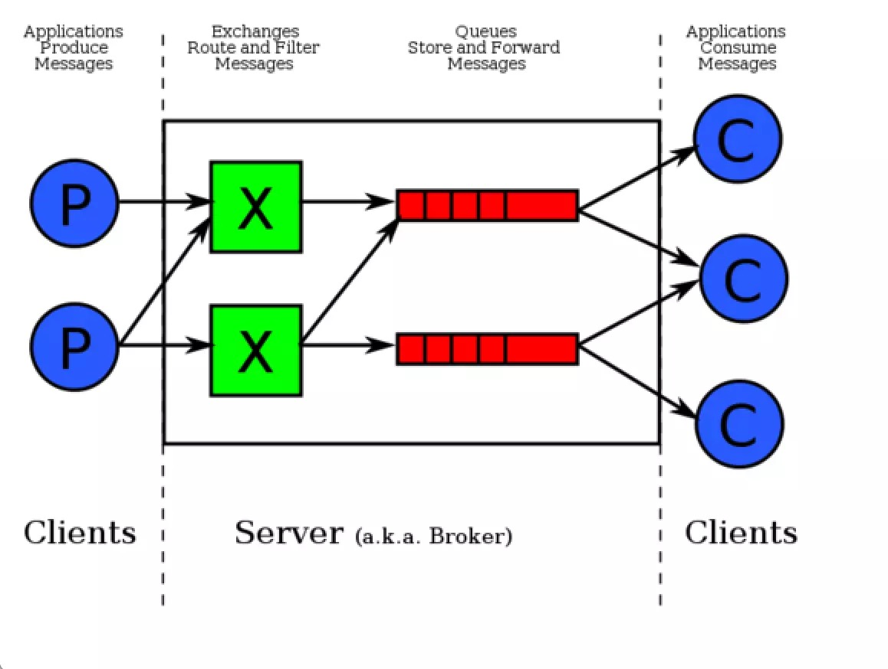
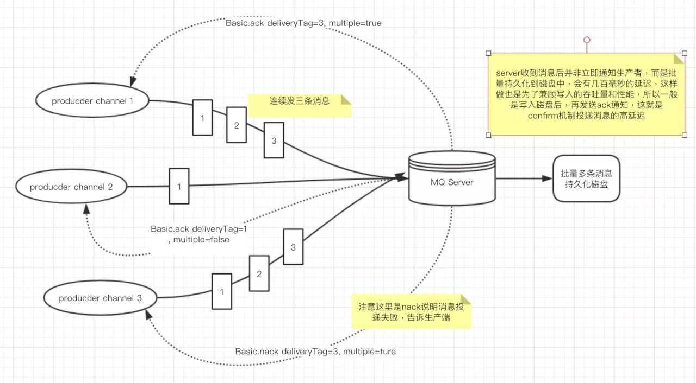
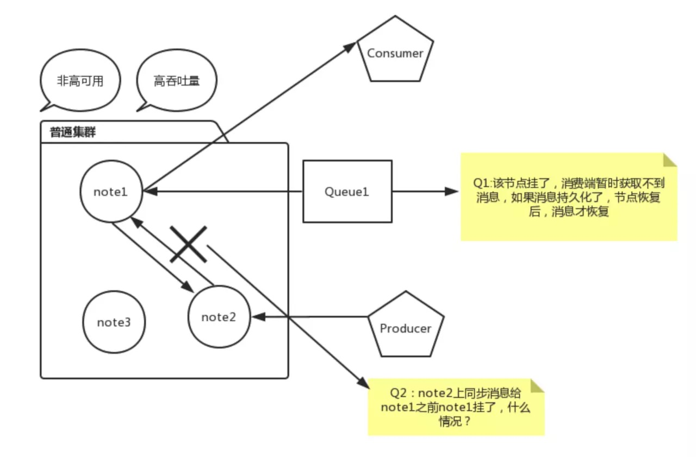

<!DOCTYPE html>
<html>
<head><meta name="generator" content="Hexo 3.8.0">
  <meta charset="utf-8">
  

  
  <title>rabbitmq消息丢失情况分析及解决方法 | Feng Xiang Blog</title>
  <meta name="viewport" content="width=device-width, initial-scale=1, maximum-scale=1">
  <meta name="description" content="这是是详情内容">
<meta name="keywords" content="rabbitmq">
<meta property="og:type" content="article">
<meta property="og:title" content="rabbitmq消息丢失情况分析及解决方法">
<meta property="og:url" content="https://blog.ofengx.com/2019/10/17/rabbitmq消息丢失情况分析及解决方法/index.html">
<meta property="og:site_name" content="Feng Xiang Blog">
<meta property="og:description" content="这是是详情内容">
<meta property="og:locale" content="zh-CN">
<meta property="og:image" content="https://blog.ofengx.com/2019/10/17/rabbitmq消息丢失情况分析及解决方法/rabbitmq2.png">
<meta property="og:image" content="https://blog.ofengx.com/2019/10/17/rabbitmq消息丢失情况分析及解决方法/confirm.png">
<meta property="og:image" content="https://blog.ofengx.com/2019/10/17/rabbitmq消息丢失情况分析及解决方法/rabbitmq.jpg">
<meta property="og:updated_time" content="2019-10-17T14:21:09.926Z">
<meta name="twitter:card" content="summary">
<meta name="twitter:title" content="rabbitmq消息丢失情况分析及解决方法">
<meta name="twitter:description" content="这是是详情内容">
<meta name="twitter:image" content="https://blog.ofengx.com/2019/10/17/rabbitmq消息丢失情况分析及解决方法/rabbitmq2.png">
  
    <link rel="alternate" href="/atom.xml" title="Feng Xiang Blog" type="application/atom+xml">
  
  
    <link rel="icon" href="/favicon.png">
  
  
    <link href="//fonts.googleapis.com/css?family=Source+Code+Pro" rel="stylesheet" type="text/css">
  
  <link rel="stylesheet" href="/css/style.css">
</head>
</html>
<body>
  <div id="container">
    <div id="wrap">
      <header id="header">
  <div id="banner"></div>
  <div id="header-outer" class="outer">
    <div id="header-title" class="inner">
      <h1 id="logo-wrap">
        <a href="/" id="logo">Feng Xiang Blog</a>
      </h1>
      
    </div>
    <div id="header-inner" class="inner">
      <nav id="main-nav">
        <a id="main-nav-toggle" class="nav-icon"></a>
        
          <a class="main-nav-link" href="/">首页</a>
        
          <a class="main-nav-link" href="/archives">归档</a>
        
      </nav>
      <nav id="sub-nav">
        
          
            <a id="nav-icon-github" class="nav-icon" href="https://github.com/efengx" title="GitHub"></a>
          
            <a id="nav-icon-twitter" class="nav-icon" href="https://twitter.com/heiyexinghai" title="Twitter"></a>
          
        
        
          <a id="nav-rss-link" class="nav-icon" href="/atom.xml" title="RSS Feed"></a>
        
        <a id="nav-search-btn" class="nav-icon" title="搜索"></a>
      </nav>
      <div id="search-form-wrap">
        <form action="//google.com/search" method="get" accept-charset="UTF-8" class="search-form"><input type="search" name="q" class="search-form-input" placeholder="Search"><button type="submit" class="search-form-submit">&#xF002;</button><input type="hidden" name="sitesearch" value="https://blog.ofengx.com"></form>
      </div>
    </div>
  </div>
</header>
      <div class="outer">
        <section id="main"><article id="post-rabbitmq消息丢失情况分析及解决方法" class="article article-type-post" itemscope itemprop="blogPost">
  <div class="article-meta">
    <a href="/2019/10/17/rabbitmq消息丢失情况分析及解决方法/" class="article-date">
  <time datetime="2019-10-17T06:07:22.000Z" itemprop="datePublished">2019-10-17</time>
</a>
    
  </div>
  <div class="article-inner">
    
    
      <header class="article-header">
        
  
    <h1 class="article-title" itemprop="name">
      rabbitmq消息丢失情况分析及解决方法
    </h1>
  

      </header>
    
    <div class="article-entry" itemprop="articleBody">
      
        <p>消息中间件是软件设计中非常好用的一个组件，如何确保消息中间件的可靠性一直是一个很大的问题。</p>
<h2 id="消息丢失场景"><a href="#消息丢失场景" class="headerlink" title="消息丢失场景"></a>消息丢失场景</h2><p><br>以上图片为rabbitmq消息推送的流程图，通过该图我们可以判断出消息有以下几种可能会存在丢失场景：</p>
<h2 id="1-生产者生产消息到RabbitMQ-Server消息丢失"><a href="#1-生产者生产消息到RabbitMQ-Server消息丢失" class="headerlink" title="1. 生产者生产消息到RabbitMQ Server消息丢失"></a>1. 生产者生产消息到RabbitMQ Server消息丢失</h2><ul>
<li>外界环境问题导致：发生网络丢包、网络故障等造成RabbitMQ Server端收不到消息，因为生产环境的网络是很复杂的，网络抖动，丢包现象很常见。</li>
<li>代码层面、配置层面、考虑不全导致消息丢失。<br>场景1: 生产者使用Confirm模式投递消息，RabbitMQ Server接收失败后会发送nack消息通知生产者，如果此时生产者监听消息失败或没做任何事情，该消息将丢失。<br>场景2: 生产者发送消息到exchange后，发送的路由和queue没有绑定，此时消息将会丢失。</li>
</ul>
<p>解决方法：发送方确认机制（publisher confirm）<br>生产者通过调用channel.confirmSelect方法将信道设置为confirm模式，一旦信道进入confirm模式，所有该信道上面发布的消息都会被指派一个唯一的ID(从1开始)，一旦消息被投递道所有匹配的队列之后，RabbitMQ就会发送一个确认（Basic.Ack）给生产者（包含消息的唯一deliveryTag和multiple参数），这就使得生产者知晓消息已经正确到达了目的地了。</p>
<p>confirm模式的三种实现方式：</p>
<figure class="highlight java"><table><tr><td class="gutter"><pre><span class="line">1</span><br><span class="line">2</span><br><span class="line">3</span><br><span class="line">4</span><br><span class="line">5</span><br><span class="line">6</span><br><span class="line">7</span><br><span class="line">8</span><br><span class="line">9</span><br><span class="line">10</span><br><span class="line">11</span><br><span class="line">12</span><br><span class="line">13</span><br><span class="line">14</span><br><span class="line">15</span><br><span class="line">16</span><br><span class="line">17</span><br><span class="line">18</span><br><span class="line">19</span><br><span class="line">20</span><br><span class="line">21</span><br><span class="line">22</span><br><span class="line">23</span><br><span class="line">24</span><br><span class="line">25</span><br><span class="line">26</span><br><span class="line">27</span><br><span class="line">28</span><br><span class="line">29</span><br><span class="line">30</span><br><span class="line">31</span><br><span class="line">32</span><br><span class="line">33</span><br><span class="line">34</span><br><span class="line">35</span><br><span class="line">36</span><br><span class="line">37</span><br><span class="line">38</span><br><span class="line">39</span><br><span class="line">40</span><br><span class="line">41</span><br><span class="line">42</span><br><span class="line">43</span><br><span class="line">44</span><br><span class="line">45</span><br><span class="line">46</span><br><span class="line">47</span><br><span class="line">48</span><br><span class="line">49</span><br><span class="line">50</span><br><span class="line">51</span><br><span class="line">52</span><br><span class="line">53</span><br><span class="line">54</span><br><span class="line">55</span><br><span class="line">56</span><br><span class="line">57</span><br><span class="line">58</span><br><span class="line">59</span><br><span class="line">60</span><br><span class="line">61</span><br><span class="line">62</span><br><span class="line">63</span><br><span class="line">64</span><br><span class="line">65</span><br><span class="line">66</span><br><span class="line">67</span><br><span class="line">68</span><br><span class="line">69</span><br><span class="line">70</span><br><span class="line">71</span><br></pre></td><td class="code"><pre><span class="line"><span class="comment">// 1. 串行confirm模式：producer每发送一条消息后，调用waitForConfirms()方法，等待broker端confirm，如果服务器端返回false或者超时时间内未返回，客户端进行消息重传。</span></span><br><span class="line"></span><br><span class="line"><span class="keyword">for</span> (<span class="keyword">int</span> i = <span class="number">0</span>; i &lt; <span class="number">50</span>; i++) &#123;</span><br><span class="line">    channel.basicPublish(</span><br><span class="line">        exchange, routingKey,</span><br><span class="line">        mandatory, immediate,</span><br><span class="line">        messageProperties,</span><br><span class="line">        message.getContent()</span><br><span class="line">    );</span><br><span class="line">    <span class="keyword">if</span> (channel.waitForConfirms) &#123;</span><br><span class="line">        System.out.println(<span class="string">"发送成功"</span>);</span><br><span class="line">    &#125; <span class="keyword">else</span> &#123;</span><br><span class="line">        <span class="comment">// 在这里进行重新发送</span></span><br><span class="line">        System.out.println(<span class="string">"发送失败"</span>);</span><br><span class="line">    &#125;</span><br><span class="line">&#125;</span><br><span class="line"></span><br><span class="line"></span><br><span class="line"><span class="comment">// 2. 批量confirm模式：producer每发送一批消息后，调用waitForConfirms()方法，等待broker端confirm</span></span><br><span class="line"><span class="keyword">for</span> (<span class="keyword">int</span> i = <span class="number">0</span>; i &lt; <span class="number">50</span>; i++&gt;) &#123;</span><br><span class="line">    channel.basicPublish(</span><br><span class="line">        exchange, routingKey,</span><br><span class="line">        mandatory, immediate,</span><br><span class="line">        messageProperties,</span><br><span class="line">        message.getContent()</span><br><span class="line">    );</span><br><span class="line">&#125;</span><br><span class="line"><span class="keyword">if</span> (channel.waitForConfirms()) &#123;</span><br><span class="line">    System.out.println(<span class="string">"发送成功"</span>)</span><br><span class="line">&#125; <span class="keyword">else</span> &#123;</span><br><span class="line">    System.out.println(<span class="string">"发送失败"</span>)</span><br><span class="line">&#125;</span><br><span class="line"></span><br><span class="line"></span><br><span class="line"><span class="comment">// 3. 异步confirm模式：提供一个回调方法，broker confirm了一条或者多条消息后producer端会回调这个方法。</span></span><br><span class="line">Channel channel = channelManager.getPublisherChannel(namespaceName);</span><br><span class="line"><span class="comment">// 监听类</span></span><br><span class="line">ProxiedConfirmListener confirmListener = <span class="keyword">new</span> ProxiedConfirmListener();</span><br><span class="line">confirmListener.setChannelManager(channelManager);</span><br><span class="line">confirmListener.setChannel(channel);</span><br><span class="line">confirmListener.setNamespace(namespaceName);</span><br><span class="line">confirmListener.addSuccessCallbacks(successCallbacks);</span><br><span class="line">channel.addConfirmListener(confirmListener);</span><br><span class="line"><span class="comment">// 开启confirm模式</span></span><br><span class="line">channel.confirmSelect();</span><br><span class="line">AMQP.BasicProperties messageProperties = <span class="keyword">null</span>;</span><br><span class="line"><span class="keyword">if</span> (message.getProperty() <span class="keyword">instanceof</span> AMQP.BasicProperties) &#123;</span><br><span class="line">    messageProperties = (AMQP.BasicProperties)message.getProperty();</span><br><span class="line">&#125;</span><br><span class="line">confirmListener.toConfirm(channel.getNextPublishSeqNo(), rawMsg);</span><br><span class="line"><span class="keyword">for</span> (<span class="keyword">int</span> i = <span class="number">0</span>; i &lt; <span class="number">50</span>; i++) &#123;</span><br><span class="line">    channel.basicPublish(</span><br><span class="line">        exchange, routingKey,</span><br><span class="line">        mandatory, immediate,</span><br><span class="line">        messageProperties,</span><br><span class="line">        message.getContent()</span><br><span class="line">    );</span><br><span class="line">&#125;</span><br><span class="line"><span class="comment">// 异步模式需要监听类，监听server端的通知消息，异步的好处是性能回大幅提升（非柱塞式）</span></span><br><span class="line"><span class="comment">// ...略过继承类代码，以下是需要实现的接口：</span></span><br><span class="line"><span class="keyword">package</span> com.rabbitmq.client;</span><br><span class="line"><span class="keyword">import</span> java.io.IOException;</span><br><span class="line"></span><br><span class="line"><span class="keyword">public</span> <span class="class"><span class="keyword">interface</span> <span class="title">ConfirmListener</span> </span>&#123;</span><br><span class="line">    <span class="comment">// handleAck RabbitMQ消息接收成功后的实现方法</span></span><br><span class="line">    <span class="comment">// 例如：发送端投递消息前，需要把消息先存起来，比如用KV存储，接收到ack后删除</span></span><br><span class="line">    <span class="function"><span class="keyword">void</span> <span class="title">handleAck</span><span class="params">(<span class="keyword">long</span> deliveryTag, <span class="keyword">boolean</span> multiple)</span> <span class="keyword">throws</span> IOException</span>;</span><br><span class="line"></span><br><span class="line">    <span class="comment">// handleNack RabbitMQ 消息接收失败的通知方法，用户可以在这里重新投递消息</span></span><br><span class="line">    <span class="function"><span class="keyword">void</span> <span class="title">handleNack</span><span class="params">(<span class="keyword">long</span> deliveryTag, <span class="keyword">boolean</span> multiple)</span> <span class="keyword">throws</span> IOException</span>;</span><br><span class="line">&#125;</span><br></pre></td></tr></table></figure>
<p><br>图片说明：channel1连续发送1,2,3条消息到RabbitMQ-Server, RabbitMQ-Server通知返回一条通知，厘米包含回传给生产者的确认消息中的deliveryTag包含了确认消息的序号，此处还有一个参数multiple=true,表示到这个序号之前的所有消息都已经得到了处理。这样就减少了客户端和服务器端的通信次数，提升了效率。<br>（备注：使用说明方式存储消息？在每秒几千甚至上万的消息投递出去，消息的ack速度必须要快。放在内存中有可能内存溢出。采用KV存储是最合适的方法，但是确保KV存储的高可用，又是一个比较复杂的问题。这个问题就不在本文讨论范围，后续分析以下使用radis或Mongodb时的性能表现和可靠性）</p>
<h2 id="2-RabbitMQ-Server中存在的消息丢失或可靠性不足"><a href="#2-RabbitMQ-Server中存在的消息丢失或可靠性不足" class="headerlink" title="2. RabbitMQ Server中存在的消息丢失或可靠性不足"></a>2. RabbitMQ Server中存在的消息丢失或可靠性不足</h2><ul>
<li>消息未完全持久化，当机器重启后，消息会全部丢失，甚至Queue也不见了。</li>
<li>单节点模式问题：如果某哥节点挂了，消息就不能用了，业务可能瘫痪，只能等待。</li>
<li>普通集群模式：某个节点挂了，该节点上的消息不能用，有影响的业务瘫痪，只能等节点恢复重启可用（建立在消息持久化）</li>
</ul>
<p>RabbitMQ集群模式比较特殊，所有节点仅存放消息结构和元数据（可以理解为索引），具体的队列信息仅存在某一个节点上面。（这是为了提高性能，如果每次把所有内容同步到所有节点将产生额外的系统性能开销）。下图简单描述了这个过程：<br><br>解决该问题的方法：使用镜像模式(镜像模式比较复杂，后续单独发文说明)</p>
<h2 id="3-RabbitMQ-Server到消费者消息丢失"><a href="#3-RabbitMQ-Server到消费者消息丢失" class="headerlink" title="3. RabbitMQ Server到消费者消息丢失"></a>3. RabbitMQ Server到消费者消息丢失</h2><p>消费端接收到相关消息之后，消费端还没来得及处理消息，消费端机器就宕机了，此时消息如果处理不当会有丢失风险。（通过消费端ack机制预防）</p>

      
    </div>
    <footer class="article-footer">
      <a data-url="https://blog.ofengx.com/2019/10/17/rabbitmq消息丢失情况分析及解决方法/" data-id="ck1ujbhab000fiv5v21ihf9ds" class="article-share-link">分享</a>
      
      
  <ul class="article-tag-list"><li class="article-tag-list-item"><a class="article-tag-list-link" href="/tags/rabbitmq/">rabbitmq</a></li></ul>

    </footer>
  </div>
  
    
<nav id="article-nav">
  
  
    <a href="/2019/10/15/设计模式及实现/" id="article-nav-older" class="article-nav-link-wrap">
      <strong class="article-nav-caption">Older</strong>
      <div class="article-nav-title">设计模式及实现</div>
    </a>
  
</nav>

  
</article>

</section>
        
          <aside id="sidebar">
  
    

  
    
  <div class="widget-wrap">
    <h3 class="widget-title">标签</h3>
    <div class="widget">
      <ul class="tag-list"><li class="tag-list-item"><a class="tag-list-link" href="/tags/CI-CD/">CI/CD</a></li><li class="tag-list-item"><a class="tag-list-link" href="/tags/GitOps/">GitOps</a></li><li class="tag-list-item"><a class="tag-list-link" href="/tags/SOA/">SOA</a></li><li class="tag-list-item"><a class="tag-list-link" href="/tags/blog/">blog</a></li><li class="tag-list-item"><a class="tag-list-link" href="/tags/docker/">docker</a></li><li class="tag-list-item"><a class="tag-list-link" href="/tags/hexo/">hexo</a></li><li class="tag-list-item"><a class="tag-list-link" href="/tags/kubernetes/">kubernetes</a></li><li class="tag-list-item"><a class="tag-list-link" href="/tags/live2d/">live2d</a></li><li class="tag-list-item"><a class="tag-list-link" href="/tags/markdown/">markdown</a></li><li class="tag-list-item"><a class="tag-list-link" href="/tags/rabbitmq/">rabbitmq</a></li><li class="tag-list-item"><a class="tag-list-link" href="/tags/simple/">simple</a></li><li class="tag-list-item"><a class="tag-list-link" href="/tags/spring-cloud/">spring cloud</a></li><li class="tag-list-item"><a class="tag-list-link" href="/tags/springcloud/">springcloud</a></li><li class="tag-list-item"><a class="tag-list-link" href="/tags/zul/">zul</a></li><li class="tag-list-item"><a class="tag-list-link" href="/tags/微服务/">微服务</a></li><li class="tag-list-item"><a class="tag-list-link" href="/tags/架构/">架构</a></li><li class="tag-list-item"><a class="tag-list-link" href="/tags/系统架构/">系统架构</a></li><li class="tag-list-item"><a class="tag-list-link" href="/tags/设计模式/">设计模式</a></li></ul>
    </div>
  </div>


  
    
  <div class="widget-wrap">
    <h3 class="widget-title">标签云</h3>
    <div class="widget tagcloud">
      <a href="/tags/CI-CD/" style="font-size: 10px;">CI/CD</a> <a href="/tags/GitOps/" style="font-size: 10px;">GitOps</a> <a href="/tags/SOA/" style="font-size: 10px;">SOA</a> <a href="/tags/blog/" style="font-size: 10px;">blog</a> <a href="/tags/docker/" style="font-size: 10px;">docker</a> <a href="/tags/hexo/" style="font-size: 20px;">hexo</a> <a href="/tags/kubernetes/" style="font-size: 10px;">kubernetes</a> <a href="/tags/live2d/" style="font-size: 10px;">live2d</a> <a href="/tags/markdown/" style="font-size: 10px;">markdown</a> <a href="/tags/rabbitmq/" style="font-size: 10px;">rabbitmq</a> <a href="/tags/simple/" style="font-size: 10px;">simple</a> <a href="/tags/spring-cloud/" style="font-size: 15px;">spring cloud</a> <a href="/tags/springcloud/" style="font-size: 10px;">springcloud</a> <a href="/tags/zul/" style="font-size: 10px;">zul</a> <a href="/tags/微服务/" style="font-size: 10px;">微服务</a> <a href="/tags/架构/" style="font-size: 10px;">架构</a> <a href="/tags/系统架构/" style="font-size: 10px;">系统架构</a> <a href="/tags/设计模式/" style="font-size: 10px;">设计模式</a>
    </div>
  </div>

  
    
  <div class="widget-wrap">
    <h3 class="widget-title">归档</h3>
    <div class="widget">
      <ul class="archive-list"><li class="archive-list-item"><a class="archive-list-link" href="/archives/2019/10/">十月 2019</a></li><li class="archive-list-item"><a class="archive-list-link" href="/archives/2019/07/">七月 2019</a></li><li class="archive-list-item"><a class="archive-list-link" href="/archives/2019/05/">五月 2019</a></li><li class="archive-list-item"><a class="archive-list-link" href="/archives/2019/03/">三月 2019</a></li></ul>
    </div>
  </div>


  
    
  <div class="widget-wrap">
    <h3 class="widget-title">最新文章</h3>
    <div class="widget">
      <ul>
        
          <li>
            <a href="/2019/10/17/rabbitmq消息丢失情况分析及解决方法/">rabbitmq消息丢失情况分析及解决方法</a>
          </li>
        
          <li>
            <a href="/2019/10/15/设计模式及实现/">设计模式及实现</a>
          </li>
        
          <li>
            <a href="/2019/10/10/系统架构设计学习资料二/">系统架构设计学习资料二</a>
          </li>
        
          <li>
            <a href="/2019/07/30/搭建最小springcloud/">搭建最小springcloud</a>
          </li>
        
          <li>
            <a href="/2019/07/30/语法/">markdown语法</a>
          </li>
        
      </ul>
    </div>
  </div>

  
</aside>
        
      </div>
      <footer id="footer">
  
  <div class="outer">
    <div id="footer-info" class="inner">
      &copy; 2019 Xiang Feng<br>
      Powered by <a href="https://blog.ofengx.com" target="_blank">ofengx</a>
    </div>
  </div>
</footer>
    </div>
    <nav id="mobile-nav">
  
    <a href="/" class="mobile-nav-link">首页</a>
  
    <a href="/archives" class="mobile-nav-link">归档</a>
  
</nav>
    

<script src="//ajax.googleapis.com/ajax/libs/jquery/2.0.3/jquery.min.js"></script>


  <link rel="stylesheet" href="/fancybox/jquery.fancybox.css">
  <script src="/fancybox/jquery.fancybox.pack.js"></script>


<script src="/js/script.js"></script>


  </div>
<script src="/live2dw/lib/L2Dwidget.min.js?0c58a1486de42ac6cc1c59c7d98ae887"></script><script>L2Dwidget.init({"pluginRootPath":"live2dw/","pluginJsPath":"lib/","pluginModelPath":"assets/","tagMode":false,"debug":false,"model":{"jsonPath":"/live2dw/assets/shizuku.model.json"},"display":{"position":"right","width":150,"height":300},"mobile":{"show":true},"log":false});</script></body>
</html>